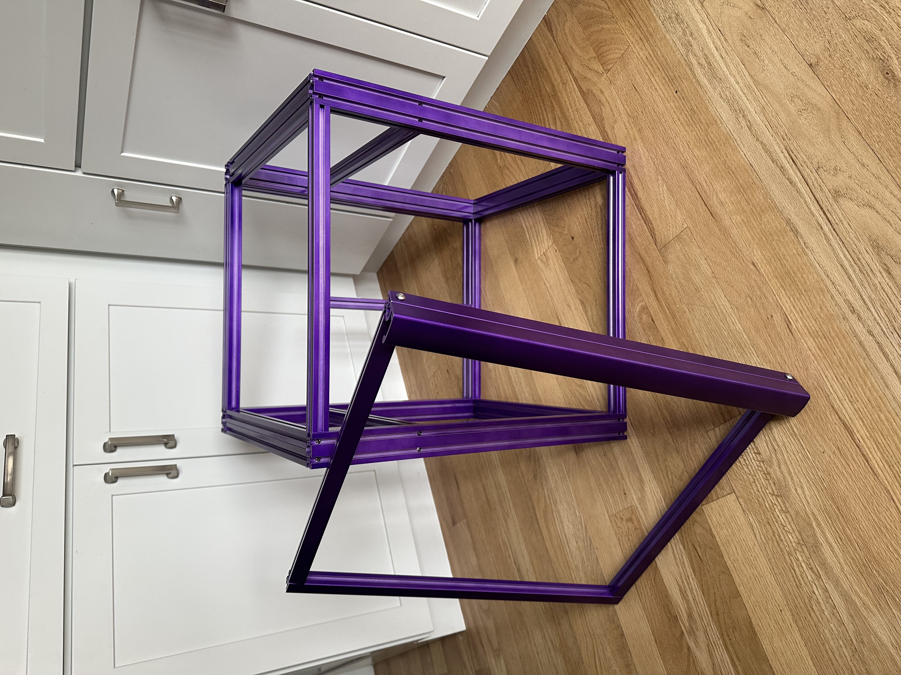
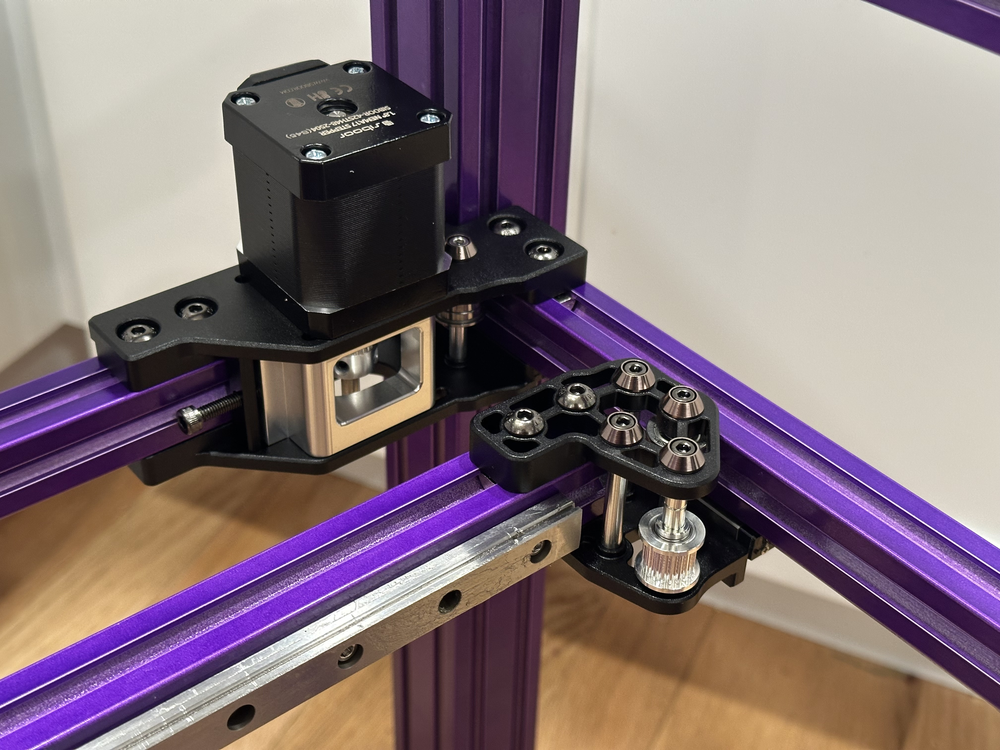
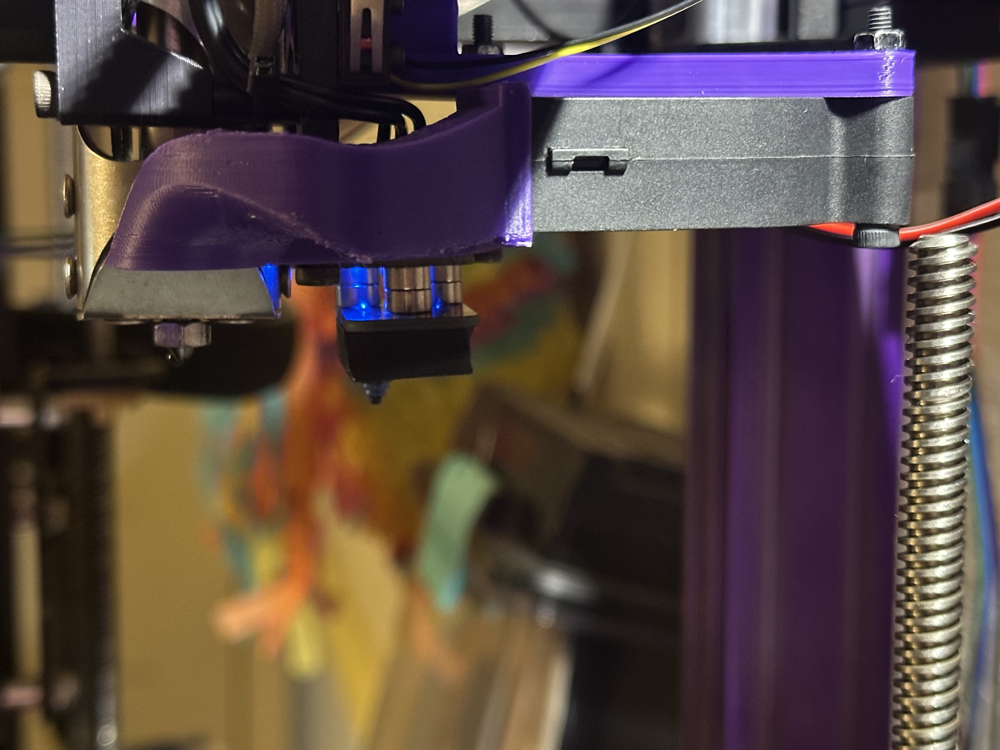
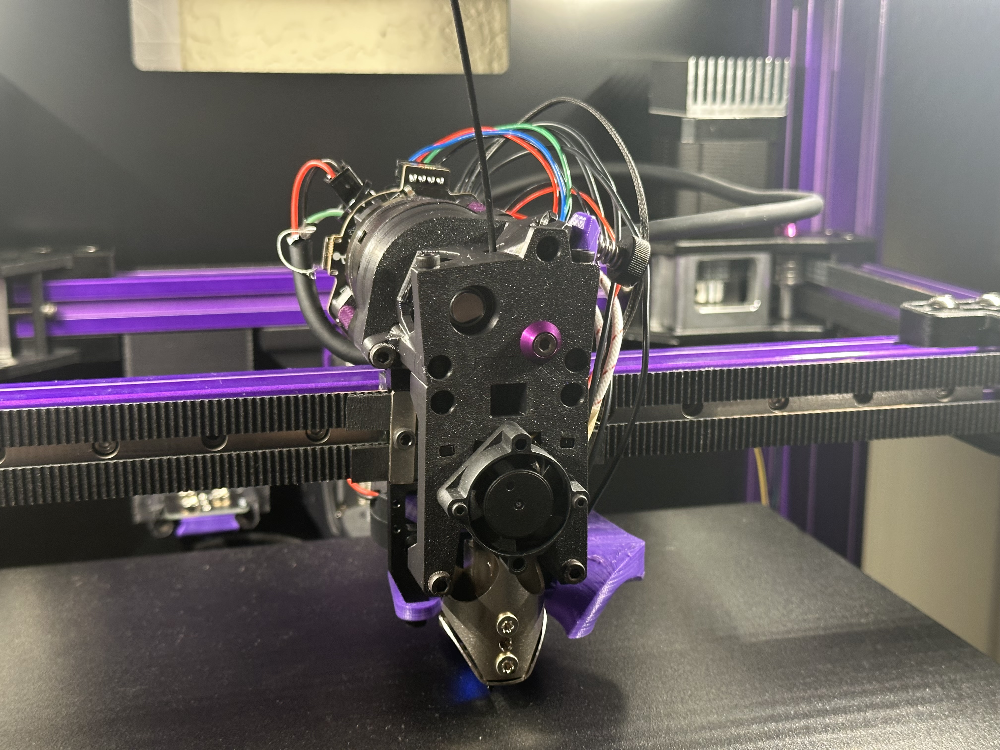

Build, wiring, motion system, prints, and detail shots.

Custom frame assembled for the first time - derived from EZbake frame design

First installation of CNC gantry parts. Aluminum motor mounts and XY joints (black) allow for increased rigidity and strengthAll hand wired electronics. Picture shows early wiring with power supply, RPi4b, Octopus pro v1.1 and 24-5v buck converter

The lower right piece is the bed probe. This allows for auto bed leveling and Z homing. Probe detaches during printing

Highly custom toolhead designed to be light and reliable. All files found on OnShape. CHUBE hotend provides high flow, rigidity and reliability. Integrated LDO Gallileo 2 extruder reduces Z artifacts and improves reliabilityCustom frame assembled for the first time - derived from EZbake frame design